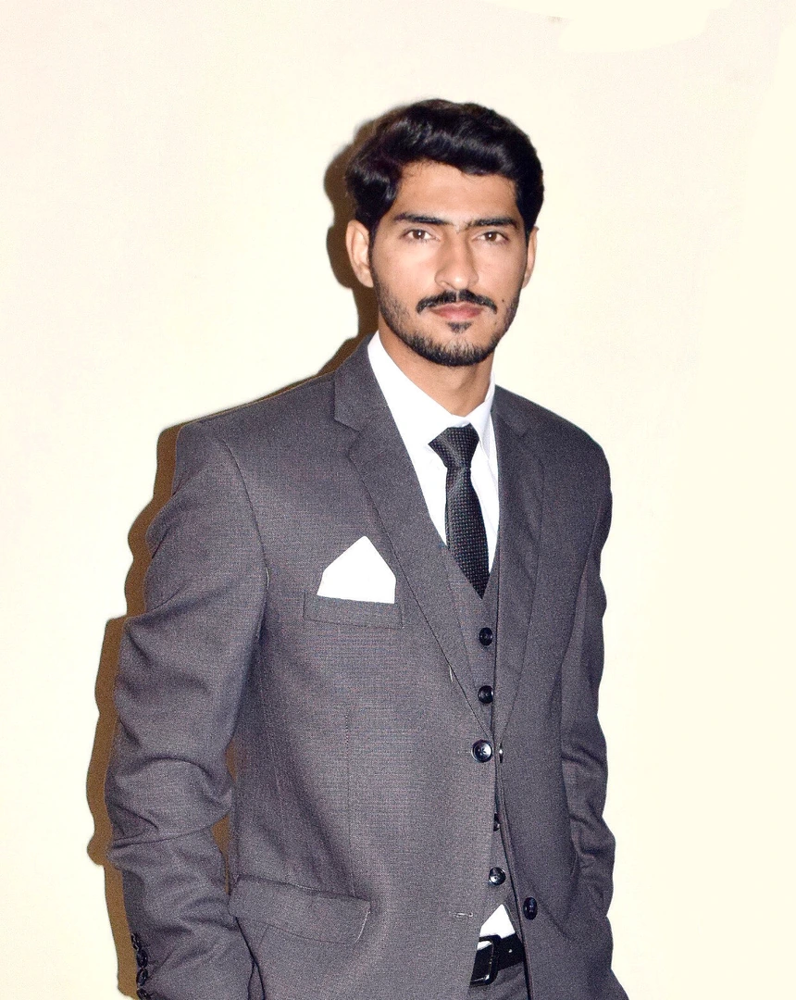

Built to impress clients and hiring teams
This portfolio is focused on Ruby on Rails development, backend problem solving, and the kind of product work freelance clients usually care about most.
I help startups and clients build stable Ruby on Rails products with clean backend architecture, reliable REST APIs, faster bug fixing, and production-ready features.
With 3 years of Ruby on Rails experience, I focus on backend development, API integration, performance improvements, database-driven workflows, and real-world product delivery.

This portfolio is focused on Ruby on Rails development, backend problem solving, and the kind of product work freelance clients usually care about most.
Small features, fixes, clean APIs, and focused product improvements.
Structured Rails code, database-backed flows, and scalable architecture.
I am Muhammad Abdullah, a Ruby on Rails Developer and Backend Developer from Pakistan. I work mainly on Rails applications, REST APIs, business logic, bug fixing, and feature delivery for real products. My work is focused on solving backend problems clearly, shipping reliable functionality, and keeping code maintainable.
My skill set is centered on Ruby on Rails development, backend systems, API development, and practical collaboration tools that help products move forward.
These projects reflect my experience as a Ruby on Rails Developer, Backend Developer, and API Developer working on practical product needs, business logic, and feature delivery.
Some client projects are private. Case study details and walkthroughs can be shared during a call or direct discussion.
QUL is an AI-based product where the goal was to support structured content delivery, backend logic, and scalable APIs. I contributed Rails backend work that helped organize data flow and support product functionality more reliably.
Autopartify is an auto-parts platform that needed smooth inventory flows, searchable data, and reliable ordering logic. I worked on Rails backend features that supported product listings, backend workflows, and operational stability.
Autorentify focused on rental booking and availability management. My work centered on backend feature development for booking workflows, status handling, and data consistency across the application.
Rexo Games required backend support for game-related logic, data handling, and product-side workflows. I contributed backend development focused on functionality, reliability, and application-level improvements.
I help clients improve existing Rails products and build new backend functionality with clean implementation, practical communication, and product-focused delivery.
I investigate issues, trace backend bugs, and deliver reliable fixes without overcomplicating the codebase.
I build REST APIs, connect third-party services, and structure backend endpoints for stable product workflows.
I add focused Rails features that move products forward without slowing down delivery or maintainability.
I improve application behavior by refining backend logic, queries, and request flow where performance matters.
If you need a Ruby on Rails Developer, Backend Developer, or API Developer for a freelance project, I am available for direct collaboration and product-focused work.
I am open to freelance work, backend improvements, bug fixing tasks, and Rails feature development for startups, agencies, and independent clients.
Rails bug fixes, backend features, API integrations, and product support.